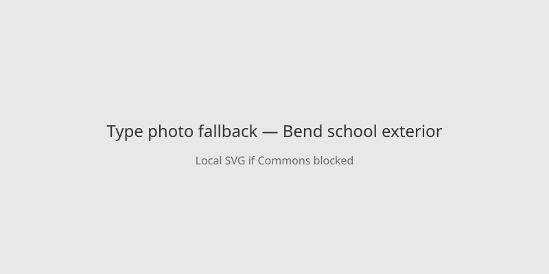

Oregon · school shooting · 15–16 October 2026
A 16-year-old killed three children and one teacher at Silver Rail Elementary in Bend before a community member shot him.

What is agreed across desks
Bend Police Chief Mike Krantz said at a press conference that a 16-year-old Bend resident forced his way into Silver Rail Elementary School on Thursday 15 October by shooting through locked doors with a long gun. The first 911 call came at about 12:59 p.m. local time from a person in a vehicle who reported being shot at. Officers arrived minutes later. A community member who had seen the suspect enter pursued him into the school and engaged him; the suspect was shot and killed. Three children aged 5, 8 and 11 and one teacher were killed. A 7-year-old child and a 54-year-old teacher were taken to hospital in critical condition. About 450 students attend the school. District schools were closed Friday. Reuters, BBC, Al Jazeera (citing AP) and local reports match on these core facts.
What is only a quote
Statements that the community member “saved lives” or acted heroically are characterizations. The chief’s description of the sequence is the operational account. No motive has been stated. The shooter’s name has not been released in the initial wires.
Mechanism a reader needs
Silver Rail Elementary is a public K–5 school in Bend, Deschutes County, roughly 160 km southeast of Portland. Active-shooter protocols call for lockdown and rapid police response; here the interval from first call to the suspect being down was measured in minutes. A bystander with a firearm who enters a school is an unusual variable; police have not released further details on that person’s status. Mass-casualty school shootings in the United States since 2006 number in the low dozens; the youngest victim in this case is among the youngest recorded in that set. Trauma response, evidence collection and family notifications continue after the scene is secured.
The photograph above is a type image of the historic Reid School in the same city, listed on the National Register. It is not the building where the shooting occurred.
What this story is not
It is not a statement about gun policy. It is not an identification of the bystander beyond “community member.” It is not a claim that the school had prior specific warnings about this individual.

Source articles and scores
| Outlet | Headline | T | N | C |
|---|---|---|---|---|
| Reuters | Shooter kills four at Oregon elementary school before being shot dead by community member | 96 | 0 | 100 |
| BBC | Children and teacher killed in Oregon primary school shooting | 95 | 0 | 100 |
| Al Jazeera / AP | Three children, one teacher killed in Oregon school shooting | 94 | 0 | 98 |
Hero: Wikimedia Commons type photograph of historic Reid School, Bend (Oregon State Archives, public domain). Special:FilePath redirects to upload.wikimedia.org. Caption states it is not the event school. onerror to local SVG. No crossorigin.